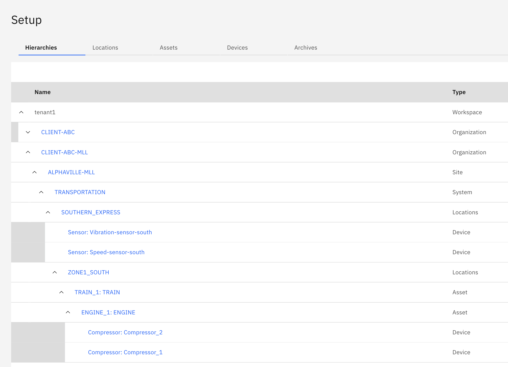

Objectives
In this Exercise you will learn how to:
- Assign devices to the asset hierarchy
Assign compressor devices to assets by using a CSV template file and import the assignment.
The CSV file to assign devices for our functional company Acme that manages transportation networks looks like this:

Edit the assign devices CSV to match your hierarchy
- Download the Client-ABC devices CSV to your local system.
- Open the file in your favorite text editor
- Find/Replace -MLL with -<your initials>
- Save the file
Assign devices
- Open the Monitor Setup page
- Click on Import button then choose "Assign devices"
- Using the CSV file from step previous section, drag the CSV into the blue box or click to select CSV file from filesystem
- The system will validate your CSV file
- Click Add
- You can see the devices in your hierarchy
